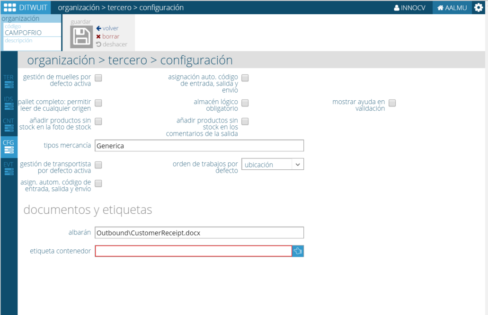

Configuración¶
{kind=link}
Desde esta pantalla es posible configurar cómo se gestionará la mercancía de este tercero.
Asignación automática de código de entrada, salida y envío¶
Al crear una orden de entrada, orden de salida o envío, si está activada esta gestión, el sistema propone como código de la entidad (orden de entrada, orden de salida y envío) el número siguiente al contador asociado a la entidad.
Esta configuración puede activarse a nivel de almacén (para todos los propietarios) o sólo en los propietarios que se desee.
La configuración a nivel de almacén se realiza con la opción de configuración: asignación auto. código de entrada, salida y envío.
En el caso del tercero propietario, si el tercero propietario tiene el tag Propietario (buyer), le aparece esta opción en el apartado de configuración.
Con esta opción activada a nivel de propietario o de almacén, al crear una Orden de entrada o Salida e introducir el propietario, automáticamente propondrá el siguiente código del contador de la entidad. En el caso de los envíos, lo hará al entrar a crear un nuevo envío,
Pallet completo: permitir leer cualquier origen¶
Con esta opción activa es posible leer un palet durante la preparación de palet completo y no es obligatorio tomarlo de la ubicación indicada por la actividad de palet completo a realizar.
Mostrar ayuda en validación¶
En la validación en etiqueta vacía habilita la posibilidad de consultar los artículos de la entrada para seleccionar uno de ellos como el artículo a validar. Es idóneo para dar entrada a artículos sin código de barras.
Orden de trabajos por defecto¶
Cuando se asignan trabajos de picking se puede definir cómo se desea que se asignen los trabajos a los operarios: Por ubicación, por ruta de picking, por cantidad, por fragilidad.
Otros Settings¶
- Gestión de muelles por defecto activa. Permite asignar un muelle por defecto a la mercancía que se recibe.
- Añadir productos sin stock en la foto de stock. En el interfaz de foto de stock se envía también la información de los productos que no tienen stock.
- Almacén lógico obligatorio. Permite crear almacenes virtuales dentro del almacén de tal forma que se asigna la mercancía a dicho almacén lógico y se pueden solicitar salidas de mercancía de un almacén lógico concreto.
- Añadir productos sin stock en los comentarios de la salida. Indica en los comentarios aquellos productos que se quedan sin stock con esta salida.
- Tipos de mercancía. Permite, en las salidas de este tercero, indicar una clasificación a nivel de cabecera de la salida sobre el tipo de mercancía que se incluye en dicha salida.
- Gestión de transportista por defecto activa. Se usarán transportistas en la gestión.
Informes¶
Además, en esta configuración es posible definir determinados informes específicos para el tercero:
- Albarán. En albarán se encuentra la plantilla que utilizará DITWUIT como albarán de entrega para las salidas asociadas a este tercero cuando es un propietario.
- Etiqueta contenedor. Permite indicar una etiqueta específica de contenedor para este tercero cuando es un propietario. Si se pone * en el nombre de la etiqueta podemos consultar todos los tipos definidos.